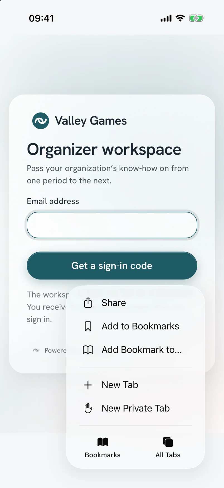
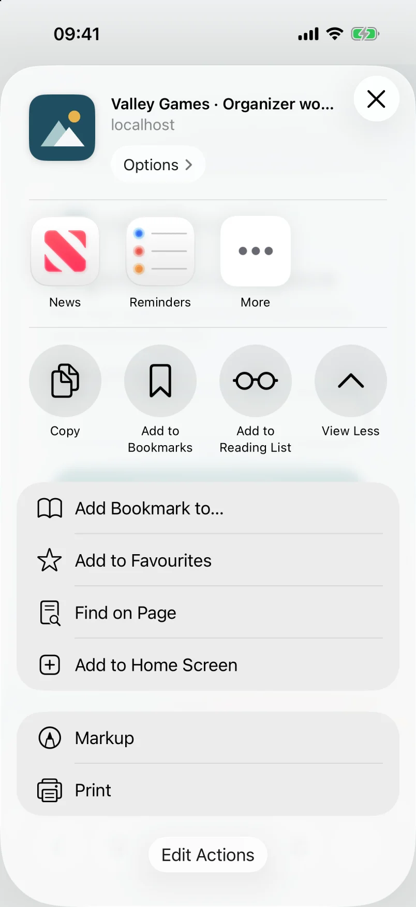
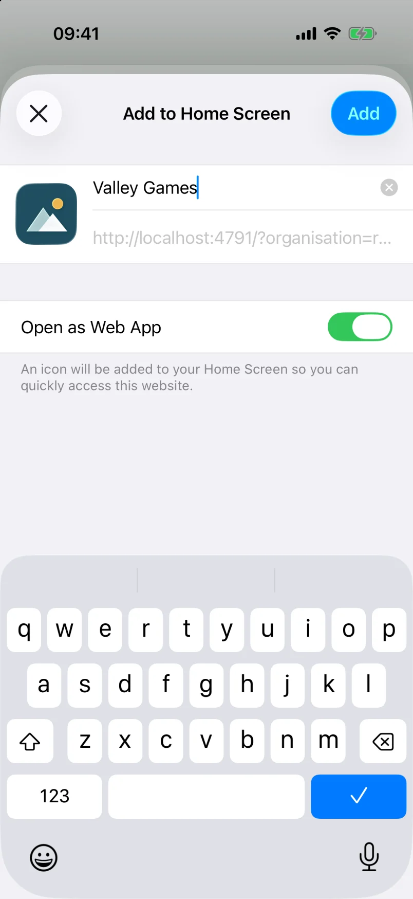
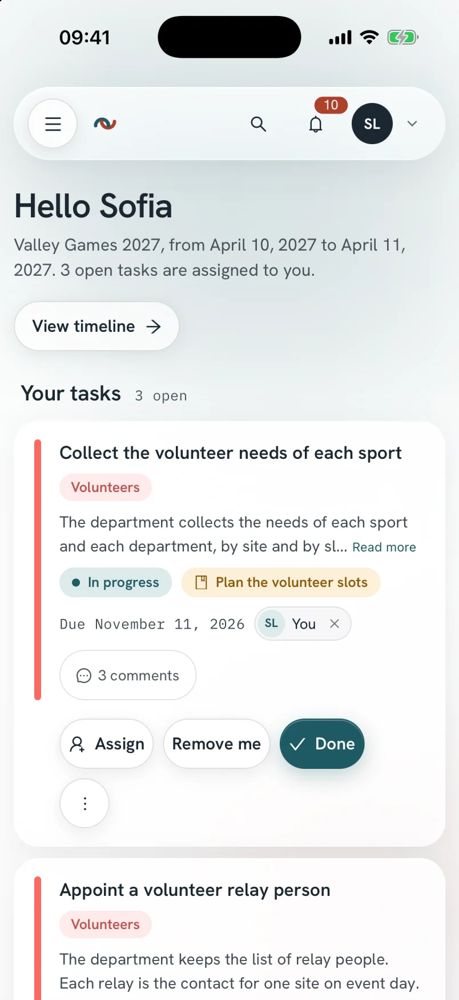

You add the organizer workspace to your phone’s home screen. It then opens like an app, under your organization’s name and icon, without an address bar.
This guide complements the “First steps” section of the coordinators’ user guide. Installation is optional: the organizer workspace also works in your browser.
Starting point
What installing changes
The installed app is the same organizer workspace, at the same address. No app store is involved: your browser places a shortcut on the home screen, and the app opens full screen.
In the organizer workspace, your account menu has an Install the app entry. It shows the steps for the device you are using.
Three devices
Install the app
First open your organization’s organizer workspace in the browser indicated. Menu names can vary from one system version to another.
iPhone and iPad
Safari
1Open the organizer workspace in Safari.
2Tap the “Share” button: a square topped with an arrow. On iOS 26, it is in the “···” menu, at the bottom right of the screen.
3Tap “View More” if the list is collapsed, then “Add to Home Screen”.
4Check the proposed name, leave “Open as Web App” turned on, then tap “Add”.

Safari’s “···” menu, then “Share”.

The expanded share sheet, then “Add to Home Screen”.

The organization’s name and icon, then “Add”.

The app opened from the home screen.
These screenshots come from an iPhone running iOS 26, with the sample organization. The address shown is that of this test installation.
Since iOS 16.4, Chrome, Edge and Firefox offer the same entry in their share menu. On an older version, only Safari installs the app.
Android phone
Chrome
1Open the organizer workspace in Chrome.
2Open the account menu, then tap “Install the app”.
3Tap the “Install” button, then confirm in Chrome’s window.
If the “Install” button does not appear, open Chrome’s “⋮” menu, then tap “Add to Home screen”.
Computer
Chrome or Edge
1Open the organizer workspace in Chrome or Edge.
2Click the install icon, on the right of the address bar.
3Click “Install”.
On a Mac, Safari offers “Add to Dock” in the “File” menu.
First launch
Sign in to the app
The installed app asks you to sign in, even if you were signed in in your browser. On iPhone, the app and Safari do not share their session.
Enter the code
/connexion
1Open the app from the home screen.
2Enter your email address, then tap “Get a sign-in code”.
3Read the 6-digit code in the email you received, without tapping its link.
4Go back to the app, then enter the code.
The link in the email opens your browser, not the installed app. Your phone often offers the code above the keyboard. Your session then lasts 30 days and extends with each visit.
Optional
Receive notifications
Your phone shows a notification when a task is assigned to you, when one of your due dates approaches or when a join request awaits your review. The app can stay closed. On iPhone and iPad, these notifications exist only in the installed app.
Enable on a device
/<activity>/preferences
1Open the account menu, then “Preferences”.
2In the “Notifications on this device” panel, tap Enable on this device.
3Answer “Allow” to your phone’s question.
Enabling applies to this device only: you repeat it on each phone or computer. Settings can turn off a family of notifications on all your devices: your tasks, due dates and meetings, then, for admins, the join requests and team of their activities. These settings apply to the organization shown. Your emails do not change.
The panel does not appear when your organization has not turned on notifications. Signing out turns them off on the device.
Good to know
Day to day
Without a network
The app shows an “Offline” screen. You cannot view your tasks and sheets without a network. The app resumes as soon as the network returns.
New version
A notice announces a new version. You save your work, then tap “Reload”. The app never reloads by itself.
Remove the app
You remove it like any other app on your phone. Your account and your data stay in the organizer workspace.
If the icon shows the Relaytour logo
Your organization has not declared its app icon yet. An organization admin adds it in the “Organization” screen, described in the organization admins’ user guide.